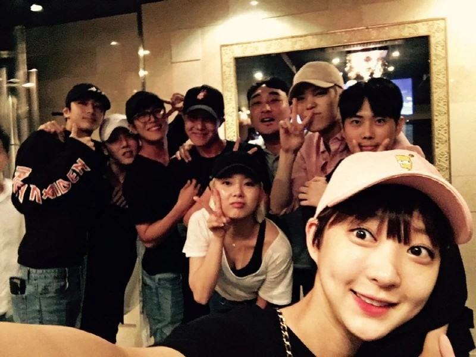
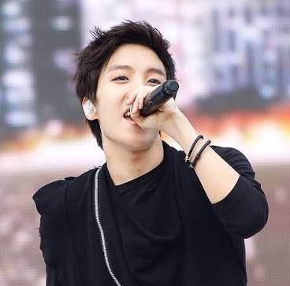
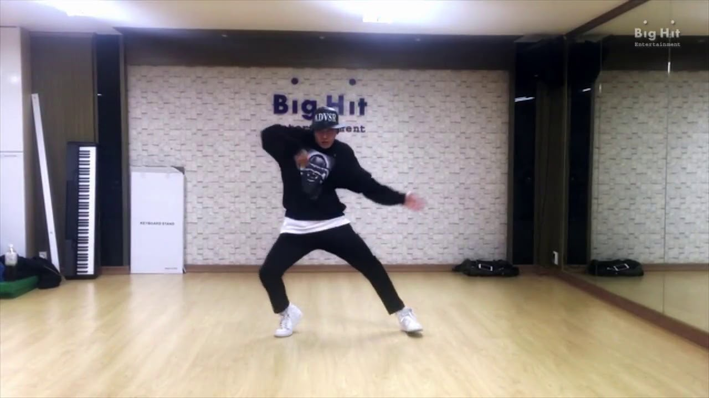
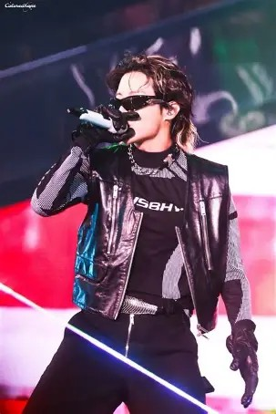
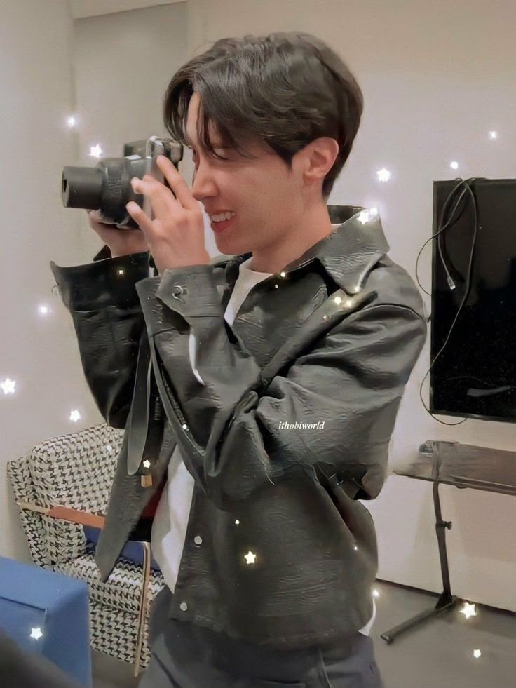
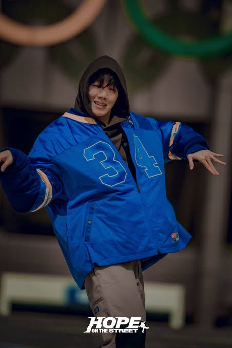
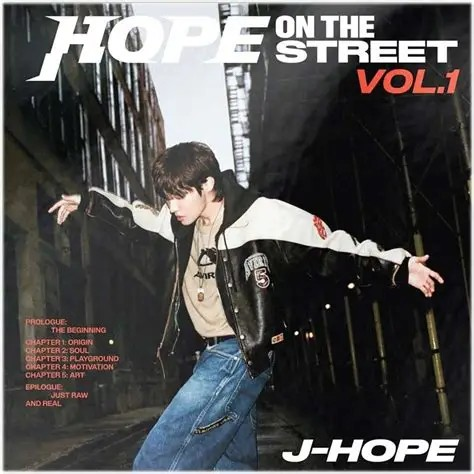

Introduction
Born on February 18, 1994, Jung Ho-seok, known professionally as J-Hope, is a South Korean rapper, singer, songwriter, dancer, and record producer. He is a member of the globally renowned boy band BTS, where he serves as a rapper and dancer. J-Hope is celebrated for his energetic performances, charismatic stage presence, and contributions to the group's music and choreography. He has also released solo music, showcasing his versatility as an artist. He is known for his positive personality, often referred to as the "sunshine" of BTS, and K-pop's "Dance Machine" for his amaizing dance skills and extremely fluid movements making him a standout performer in the K-pop industry. His energetic performances and unique style have captivated fans worldwide, earning him a special place in the hearts of many.
J-Hope's journey in the entertainment industry began as a street dancer, and he later joined Big Hit Entertainment (now HYBE Corporation) as a trainee. He debuted with BTS in 2013, and since then, he has played a crucial role in the group's success. J-Hope's solo work includes his mixtape "Hope World," which received critical acclaim and commercial success. He is also known for his philanthropic efforts and has been involved in various charitable activities. Overall, J-Hope is a multi-talented artist whose contributions to BTS and the music industry have left a lasting impact. His cheerful personality doesn't mean he's incapable of being serious, introspective or emotionally complicated, it instead maintains a balance between lightness and depth.
Early Life & Dance Roots
Long before becoming a member of BTS, Jung Hoseok had already established himself as a talented dancer in his hometown of Gwangju, South Korea. His passion for dance began during childhood, and he attended Gwangju Music Academy, where he trained in various street dance styles. He became particularly skilled in popping, locking, freestyle and other forms of urban hip-hop, developing the exceptional rhythm, precision and body control that would later become defining elements of his performances.
Hoseok was a member of NEURON (NEURON crew) an underground dance crew formed in Gwangju under the name Smile Hoya during his second year of middle school. Where he participated in dance competitions and performances. His abilities earned him recognition within the local dance community, and he won several competitions, including a national dance competition in 2008. Before his career in music began, dance was already an important part of his identity and the foundation of his artistic development.
His years of dance training also influenced the way he would eventually approach music. His understanding of rhythm, movement and musical timing became an advantage when he began developing his rap skills, allowing him to approach performances with an instinctive understanding of how music and choreography work together.

Joining Big Hit & Trainee Years
In 2010, Hoseok auditioned for Big Hit Entertainment and successfully became a trainee. He initially joined the company primarily because of his dancing abilities, with considerably less experience in singing and rap. Unlike several of the other members, he had not originally planned to become a rapper, and developing his musical abilities required him to learn an entirely new set of skills.
During his training period, Hoseok began studying rap, songwriting and vocal performance while continuing to develop his dancing. His transformation from a dance specialist into a rapper and performer demonstrated his willingness to learn beyond his original strengths. He eventually became one of the most versatile performers in the group, combining his established dance expertise with his developing musical abilities.
In 2012, he featured as a rapper on Jo Kwon's song Animal, gaining one of his earliest professional music credits before BTS's official debut. His involvement in the track demonstrated how far he had progressed beyond his original role as a dancer.
Hoseok's trainee years were not without difficulties. At one point, he briefly left the trainee program before returning because he wanted to continue pursuing his dream alongside the other members. His decision to return became an important part of his personal journey, reflecting his commitment to the team and the future they were working toward together.
Trainee Timeline
- 2010: Auditions for Big Hit and becomes a trainee
- 2012: Features on Jo Kwon's Animal
- June 5, 2013: Introduced as a BTS member
- June 13, 2013: BTS debuts
Debut & Early BTS
Hoseok was officially introduced as a BTS member on June 5, 2013, before making his official debut alongside the other members on June 13, 2013, with 2 Cool 4 Skool. His debut era showcased the combination of dance and rap that would become central to his identity within the group.
In No More Dream, his energetic rap delivery and expressive performance style complemented BTS's rebellious hip-hop concept. His dance abilities also became particularly noticeable in the group's choreography, where his precision and powerful movements helped establish the performance standards BTS would continue developing.
Even during the group's early years, Hoseok frequently took responsibility for helping the members learn and practise choreography. Having developed his dancing abilities long before joining Big Hit, he was often able to learn routines quickly and assist the others with difficult movements. He became an important figure in rehearsals, helping maintain synchronization and refining the execution of BTS's performances.
His contributions extended beyond dancing. Hoseok participated in the group's songwriting process and gradually developed a distinctive rap style that balanced his energetic stage presence with a more melodic and expressive approach to music. His early experiences as a dancer continued to influence the way he interpreted songs, particularly those requiring strong rhythmic coordination and performance intensity.

Hoseok's Unique Contributions to BTS

Main Dancer & Performance Leader
Hoseok's dance background makes him a very important figures in BTS's performance development. His understanding of choreography, musical timing and body movement allows him to approach performances with exceptional precision. He frequently assists members with choreography, helps refine synchronization and contributes to the overall quality of BTS's stage performances.
His dancing combines technical control with expressive movement, allowing him to adapt to a wide range of concepts, from the aggressive choreography of MIC Drop to the powerful performance style of ON and the vibrant movements of IDOL. His ability to switch between different styles while maintaining his own distinctive performance identity has made him an integral part of BTS's choreography.

Rapper
Although Hoseok initially entered Big Hit as a dancer, his development as a rapper became another significant aspect of his contribution to BTS. His rap style is characterized by rhythmic precision, energetic delivery, playful vocal inflections and an ability to adapt his flow to different musical arrangements.
His verses often bring a distinctive sense of movement and momentum to BTS's songs, complementing RM's lyrical depth and SUGA's more weighty delivery. Tracks such as Outro: Ego, MIC Drop, Run and Cypher Pt. 4 demonstrate different aspects of his rap versatility, from reflective storytelling to confident and energetic performances.
Songwriter & Creative Contributor
Hoseok has contributed extensively to BTS's songwriting and musical development. His creative work often reflects themes of hope, self-discovery, personal growth and the relationship between an individual's identity and the expectations of others.
His contributions are particularly evident in songs such as Outro: Ego, which explores his personal journey and acceptance of his identity, and MAMA, which expresses gratitude and affection toward his mother. Through these works, he has demonstrated an ability to translate personal experiences into music that resonates with listeners.
His musical contributions also extend to solo projects, where he has explored a broader range of sounds and artistic concepts, further demonstrating his development as a songwriter and producer.
His Contributions at a Glance
Main Dancer
Strengths: Precision, synchronization, choreography leadership
Examples: ON, MIC Drop, IDOL
Rapper
Strengths: Energetic delivery, rhythmic versatility
Examples: Cypher Pt. 4, Outro: Ego
Songwriter
Strengths: Personal storytelling, self-reflection
Examples: MAMA, Outro: Ego
Performer
Strengths: Stage charisma, audience engagement
Examples: Lollapalooza 2022
Creative Artist
Strengths: Dance, fashion, visual expression
Examples: Hope on the Street
Creative Identity & Personal Interests
Beyond music and performance, Hoseok has a strong interest in visual art, fashion and photography. His appreciation for art can be seen in his visits to exhibitions and museums, as well as his interest in documenting experiences through photography. These interests have become an important part of his personal artistic identity.
He is also widely recognized for his distinctive fashion sense, often combining streetwear influences with luxury fashion. His style reflects both his artistic individuality and his connection to street culture, allowing him to experiment with different visual expressions.
One of the projects most closely connected to his personal interests is Hope on the Street, which celebrates his roots in street dancing. The project revisits the dance culture that shaped him before his debut and explores the connections between dance, music and personal identity. It represents a meaningful return to the foundation of his artistic journey.



Solo Career & Achievements
Hoseok began exploring his individual musical identity through solo releases and collaborations while continuing his activities with BTS. His solo career isn't simply an extension of BTS's music. It's the story of a dancer who became a rapper, developed his own musical identity, and gradually challenged the expectations attached to his name.
Solo Timeline
- 2018: Releases his first solo mixtape, Hope World
- 2019: Releases Chicken Noodle Soup featuring Becky G
- 2022: Releases his first studio album, Jack in the Box
- 2024: Releases HOPE ON THE STREET VOL.1, with a documentary series about his dance roots
Chicken Noodle Soup featuring Becky G was a collaboration inspired by a song connected to his childhood dance experiences. The track incorporated Korean, English and Spanish lyrics and celebrated the influence of dance and cultural exchange in his artistic development.
July 31, 2022: Lollapalooza, Chicago. Hoseok headlined Lollapalooza in Chicago, becoming the first South Korean artist to headline a main stage at a major U.S. music festival. His performance marked a historic milestone in his solo career, celebrating his individual artistry, musical versatility and remarkable stage presence on an international platform.
Solo Releases
Hope World (2018)
Released: 2018
His first solo mixtape. It introduced a vibrant musical world of playful experimentation, colourful production and themes of self-expression.
Notable tracks: Daydream, Hope World, Airplane

Jack in the Box (2022)
Released: 2022
His first studio album and a significant departure from the brighter atmosphere of Hope World. It explores darker themes of artistic ambition, fear, self-reflection and the desire to challenge expectations.
Notable tracks: MORE, Arson

HOPE ON THE STREET VOL.1 (2024)
Released: 2024
Accompanied by a documentary series, this project revisits the street dance culture that first inspired him and connects his present achievements with his roots.
Notable tracks: On the Street, NEURON
Through his solo work, Hoseok has continued to expand his artistic identity, exploring different musical styles and concepts while maintaining the connection between music, movement and self-expression that distinctlydefines his artistry.
TMI
- Hobi is the sunshine of BTS
- He's a perfectionist one wrong dance move and you get the 'Look'
- He was originally a slow eater but the members taught him to eat fast the hard way...(whenever he ate with them they'd rush the food so fast)
- He served as an assistant drill instructor at the 36th Infantry Division training center in the military.
- He's scared of almost everything
- his signature introduction:"I'm your hope, you're my hope, I'm J-Hope!" is practically his trademark.
- He and Jin are like two peas in a pod (Literal Sun and Moon)
- His animal character is a Squirrel
Made with love for BTS and ARMY